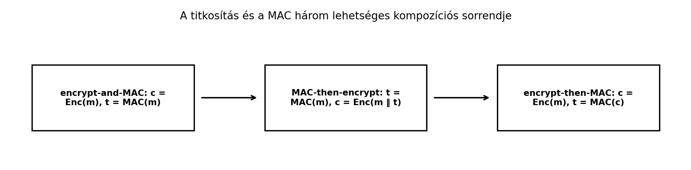

Tegyük fel, hogy a banki alkalmazásod titkosítja az átutalási üzenetet, és a rejtett szöveget elküldi a szervernek. A titkosítás megvédi az üzenet tartalmát, de semmit sem mond arról, hogy a kábelen utazó bájtokat valaki nem módosította-e. Ha a támadó például át tudja írni a kedvezményezett számlaszámát a rejtett szövegben, a visszafejtés után más üzenetet kap a szerver, és a titkosítás önmagában ezt nem érzékeli.
A Kitöltés és a padding oracle támadás alfejezetben láttunk egy konkrét, katasztrofális példát: a CBC-módú titkosítás önmagában nem nyújt integritást, és a „helyes/helytelen kitöltés” megkülönböztetés elegendő volt a teljes üzenet visszafejtéséhez. A megoldás általános elve: a rejtett szöveget is hitelesíteni kell egy üzenethitelesítő kóddal (MAC). Azonban a két primitív – a titkosítás és a MAC – összekapcsolásának többféle sorrendje van, és ezek közül nem mindegyik biztonságos.
Ebben az alfejezetben a három lehetséges kompozíciót hasonlítjuk össze, megmutatjuk, miért az encrypt-then-MAC sorrend az általánosan ajánlott, kimondjuk a hitelesített titkosítás pontos definícióját, és vázlatosan bizonyítjuk, hogy egy IND-CPA titkosítás és egy erős MAC encrypt-then-MAC módon összekapcsolva IND-CCA és INT-CTXT biztonságot ad.
A három kompozíció lényege az, hogy mit hitelesítünk: az üzenetet, a rejtett szöveget, vagy a rejtett szöveget a titkosított üzenet után.

A három sorrend:
Az ábrán szereplő sorrendek közül a harmadik az, amelynél a címke a ténylegesen átvitt rejtett szöveget köti, és amelyet a visszafejtés előtt ellenőrizni lehet.
A gyakorlatban azt szeretnénk, ha a titkosítás egyetlen lépésben biztosítaná mind a titkosságot, mind az integritást. Ezt hívjuk hitelesített titkosításnak (authenticated encryption, AEAD).
Definíció. Egy hitelesített titkosítási séma három algoritmusból áll:
Követelmény, hogy minden üzenetre teljesüljön.
A biztonsági követelmények két részből állnak:
Az INT-CTXT játék a következő. A támadó hozzáfér egy titkosító orákulumhoz, amely tetszőleges üzenetre visszaadja -et. A támadó célja, hogy a játék végén kiadjon egy olyan rejtett szöveget, amelyre , és nem szerepelt korábban az orákulum kimenetei között. A támadó előnye:
Ha ez az előny elhanyagolható minden hatékony számára, akkor a séma INT-CTXT biztonságos. A hitelesített titkosítás definíció szerint olyan séma, amely IND-CPA és INT-CTXT biztonságot is nyújt, és ebből már IND-CCA is következik (lásd IND-CCA és a malleabilitás).
Itt a támadó a párt látja. A MAC a plaintext függvénye, nem a rejtett szövegé. Ez két problémát okoz:
Történetileg az SSH-2 encrypt-and-MAC sorrendet használ; CBC-módú változatai ellen a titkosított hosszmezőt kihasználó támadás ismert (Albrecht–Paterson–Watson; a részletek ellenőrizendők). Az IPsec ESP ezzel szemben encrypt-then-MAC sorrendű.
Itt a vevőnek először vissza kell fejtenie a üzenetet, hogy megkapja -et és -t, és csak azután tudja ellenőrizni a MAC-ot. Ha a titkosítás maga is paddingot használ (például CBC-mód PKCS#7 kitöltéssel), akkor a visszafejtés során a padding ellenőrzés megelőzi a MAC ellenőrzést. Ez pontosan a Kitöltés és a padding oracle támadás feltétele: a támadó a „rossz padding” és a „rossz MAC” hibák közötti különbséget kihasználva bájtonként visszafejti az üzenetet.
A TLS CBC-módú csomagjai sokáig ezt a sorrendet használták: a rekord a plaintextet, a MAC-ot és a paddinget tartalmazta, és az egészet CBC-vel titkosították. A Lucky13 és más hasonló támadások (lásd TLS-támadások története) éppen ezt a sorrendet aknázták ki időzítési csatornákon keresztül.
Itt a vevő először a rejtett szöveget ellenőrzi a címkével, és csak ha a MAC érvényes, akkor fejti vissza a -t. Ezáltal semmilyen visszafejtési hibát nem lehet megfigyelni, mert a visszafejtéshez csak érvényes, hitelesített rejtett szövegek jutnak el. Ez a sorrend a legegyszerűbben bizonyíthatóan biztonságos, és ez az alapja a modern hitelesített titkosítási módoknak is.
Legyen egy IND-CPA biztonságos titkosítási séma, és legyen egy erősen hamisíthatatlan (sEUF-CMA) MAC-séma. Erős hamisíthatatlanság: a támadó nem tud olyan új párt előállítani, amely érvényes, akkor sem, ha -re már kapott más címkét. Determinisztikus és újraszámolással történő, kanonikus ellenőrzés esetén (ilyen a HMAC és a CMAC) ez a szokásos EUF-CMA-ból következik. Definiáljuk a encrypt-then-MAC sémát a következőképpen:
Algoritmus. Encrypt-then-MAC kompozíció:
Tétel. Ha IND-CPA biztonságos és erősen hamisíthatatlan (sEUF-CMA), akkor a fenti séma INT-CTXT és IND-CCA biztonságos.
Bizonyítási vázlat. Először az INT-CTXT-t látjuk be. Tegyük fel, hogy egy támadó érvényes, korábban nem látott párt tud előállítani. Két eset lehetséges:
Mindkét esetben a támadó előnye legfeljebb a MAC-hamisítás előnye, ami elhanyagolható, ha sEUF-CMA biztonságos. A replay támadásokat – amikor a támadó egy korábbi érvényes párt küld újra – a fenti játék kizárja, de a valós protokollokban sorszámozással vagy más állapottal kell védekezni ellenük.
Most az IND-CCA biztonsághoz. Az INT-CTXT tulajdonság miatt a visszafejtő orákulum minden olyan kérést, amely nem pontosan egy korábbi titkosító orákulum kimenete, hibajellel utasít el. Ezért a támadó számára a visszafejtő orákulum gyakorlatilag haszontalan: csak olyan rejtett szövegeket tud visszafejteni, amelyeket már ismer. Egy ilyen orákulum nem ad több információt, mint amit a támadó már tud. Ha lenne egy IND-CCA támadó a ellen, akkor abból vagy egy INT-CTXT törőt, vagy egy IND-CPA támadót tudnánk konstruálni a ellen. Mivel mindkettő lehetetlen a feltétel szerint, a IND-CCA biztonságos. ∎
Megjegyzés. Az IND-CPA + INT-CTXT ⇒ IND-CCA lépést az IND-CCA és a malleabilitás alfejezet bizonyítja; az INT-CTXT rész redukcióját az 5. feladat megoldása részletezi. Itt a cél a szerkezet megértése: a MAC a rejtett szöveget hitelesíti, ezért minden módosított vagy új rejtett szöveget a vevő a visszafejtés előtt elutasít.
A tételben feltettük, hogy a titkosításhoz és a MAC-hoz használt kulcsok függetlenek. Ez nem technikai apróság, hanem fontos biztonsági követelmény. Ha ugyanazt a kulcsot használjuk mindkét primitívhez, a két konstrukció közötti kölcsönhatás gyengítheti a rendszert.
Például ha a titkosítás CBC-mód, a MAC pedig CBC-MAC, és mindkettő ugyanazt a blokkrejtjel-kulcsot használja, akkor a CBC-titkosítás visszafejtése és a CBC-MAC számítása közötti algebrai összefüggés miatt a MAC-ot hamisítani lehet, vagy a titkosítás válik sebezhetővé. Hasonlóan, ha HMAC-ot és AES-t használunk ugyanazzal a kulccsal, a kompozíciós bizonyítás feltétele nem teljesül, mert az IND-CPA és az EUF-CMA biztonság ugyanarra a kulcsra épül, és a redukciók nem vihetők keresztül.
A gyakorlatban ezért a kulcsszármaztatási lépésben (például HKDF-fel) a mesterkulcsból külön titkosítási és MAC-kulcsot vezetnek le. Ez a szabály a Kulcsszármaztatás: HKDF alfejezetben is visszaköszön.
Vegyünk egy egyszerű, kizárólag oktatási célú toy sémát, amelyben a titkosítás XOR-művelet, a MAC pedig egy moduláris összeadás. A cél a sorrendek közötti különbség kézzel követhető bemutatása.
Legyen az üzenet egyetlen bájt: (az „A” karakter). Legyen a titkosítási kulcs , a MAC-kulcs . A toy titkosítás: . A toy MAC: , ahol a hitelesítendő érték.
Figyelem. Ez a „MAC” nem biztonságos: egy párból kiszámolható, és bármely -hez érvényes címke. A példa kizárólag az ellenőrzések sorrendjét mutatja; valódi MAC-kal (HMAC) a támadó a értéket nem tudná kiszámítani.
A támadó megváltoztatja a rejtett szöveget: . A vevő először ellenőrzi a MAC-ot: , ezért a csomagot elutasítja, mielőtt bármit visszafejtene. (Ha a támadó a címkét is -re módosítaná, a toy MAC ezt elfogadná – ezért kell valódi MAC.)
Ugyanez a sém, de a MAC a plaintextre készül: .
Ha a támadó a -t -re módosítja, a vevő kénytelen visszafejteni: . Ezután ellenőrzi a MAC-ot: , így hibát észlel. Ebben a toy példában az integritás megmarad, de a MAC a plaintext függvénye. Determinisztikus MAC-kal (akár HMAC esetén is: azonos → azonos ) viszont az encrypt-and-MAC nem IND-CPA, mert az egyenlő üzenetek címkéi egyeznek, és a támadó ezt felismeri. Egy MAC ráadásul tetszőleges információt szivárogtathat az üzenetről, ezért ez a sorrend általánosan kerülendő.
Itt , majd a teljes üzenetet titkosítjuk. A XOR-os toy titkosításhoz most hosszabb kulcsra lenne szükség, ezért ezt a példát nem részletezzük; a lényeges hiba már a padding oracle támadásnál látszott: ha a titkosítás paddingot használ, a visszafejtés során a padding ellenőrzés előbb fut, mint a MAC ellenőrzés, és ez oldalcsatornát nyit.
A TLS 1.0-tól a TLS 1.2-ig terjedő verziókban a CBC-módú titkosító csomagok a MAC-then-encrypt sorrendet használták. Egy rekord felépítése a következő volt: a plaintext, majd egy HMAC-címke, majd TLS-féle padding (az értékű utolsó bájt előtt további darab értékű bájt, vagyis darab értékű bájt, eltérően a PKCS#7-től), majd az egészet CBC-vel titkosították. A vevő először visszafejtette a rekordot, ellenőrizte a paddinget, és csak ha az érvényes volt, ellenőrizte a MAC-ot.
A padding érvényességének hibája és a MAC-hiba közötti különbség – akár a visszatérési értékben, akár az időzítésben – padding oracle támadást tett lehetővé. A támadó módosított rejtett szövegeket küldött, és a szerver válaszidejéből vagy hibakódjából megállapította, hogy a padding helyes volt-e. Ebből bájtonként visszafejtette a titkosított üzenetet. A Lucky13 támadás például azt használta ki, hogy a MAC-ellenőrzés időigénye függött a padding helyességétől.
A tanulság az, hogy a MAC-then-encrypt sorrend önmagában nem biztonságos, ha a titkosítás paddingot használ, és a visszafejtési hibák megfigyelhetők. A TLS 1.2-ben bevezetett AEAD módok (például AES-GCM) már eleve hitelesített titkosítást nyújtanak, a TLS 1.3 pedig kizárólag AEAD módokat engedélyez. A modern gyakorlatban ezért nem érdemes kézzel komponálni titkosítást és MAC-ot, hanem közvetlenül AEAD interfészt kell használni (lásd AES-GCM).
==-vel. A
MAC-ellenőrzést konstans idejű összehasonlítással kell végezni, különben
időzítési oldalcsatorna nyílik (lásd Időzítéses
támadások és konstans idejű programozás).1. feladat (A). Sorold fel a három kompozíciós sorrendet, és mindegyiknél mondd meg, mire készül a MAC címke.
2. feladat (A). Adott a toy XOR-titkosítás és a toy MAC . Legyen , , . Számítsd ki az encrypt-then-MAC kimenetet.
3. feladat (B). Tekintsük az encrypt-and-MAC sorrendet ugyanazzal a toy sémával. Legyen , , . Számítsd ki a kimenetet, és mutasd meg, hogy ha a MAC a plaintextre készül, a támadó a megváltoztatásával hogyan idéz elő hibát. Miért nem elég ez a védelem a gyakorlatban?
4. feladat (B). Írj Python-függvényt, amely az
encrypt-then-MAC elvet valósítja meg a hashlib és
hmac modulokkal egy egyszerű XOR-titkosítás felett. A
függvény bemenete az üzenet, a titkosítási kulcs és a MAC-kulcs;
kimenete a
pár. Ellenőrizd a visszafejtést egy módosított
esetén.
5. feladat (C). Bizonyítsd be részletesebben az INT-CTXT részt az encrypt-then-MAC tételből: ha a támadó érvényes párt ad, miért tudunk belőle MAC-hamisítót konstruálni? Írd le a redukció lépéseit.
6. feladat (D). Vegyél egy egyszerű toy protokollt, amely MAC-then-encrypt sorrendet használ CBC-módú XOR-titkosítással (nem valós blokkrejtjel) és PKCS#7-szerű paddinggel. Tervezz egy támadást, amely a padding hiba megfigyelésével visszafejti az utolsó bájtot, és írd le a lépéseket.
1. feladat megoldása.
- encrypt-and-MAC:
,
a MAC a plaintextre készül.
- MAC-then-encrypt:
,
majd
,
a MAC a plaintextre készül, de a MAC is titkosítva van.
- encrypt-then-MAC:
,
a MAC a rejtett szövegre készül.
2. feladat megoldása.
.
.
A kimenet:
.
3. feladat megoldása.
.
.
A kimenet:
.
Ha a támadó
-t
-re
módosítja, a vevő visszafejti:
.
A MAC-ellenőrzés:
,
tehát hibát észlel. A probléma nem feltétlenül az integritás hiánya,
hanem az, hogy a MAC a plaintextre készül, és a gyakorlatban egy nem
biztonságos vagy determinisztikus MAC szivárogtathatja a plaintextet,
illetve a visszafejtés előtti ellenőrzés hiánya oldalcsatornát
nyithat.
4. feladat megoldása.
Egy lehetséges Python-illusztráció (oktatási célra, XOR-titkosítás, nem
éles használatra):
# OKTATÁSI CÉLRA – NEM ÉLES HASZNÁLATRA
import os, hmac, hashlib
def xor_encrypt(m: bytes, key: bytes) -> bytes:
return bytes(x ^ key[i % len(key)] for i, x in enumerate(m))
def etm_encrypt(m: bytes, kE: bytes, kM: bytes):
c = xor_encrypt(m, kE)
t = hmac.new(kM, c, hashlib.sha256).digest()
return c, t
def etm_decrypt(c: bytes, t: bytes, kE: bytes, kM: bytes):
if not hmac.compare_digest(hmac.new(kM, c, hashlib.sha256).digest(), t):
return None
return xor_encrypt(c, kE)
# Példa
kE = os.urandom(16)
kM = os.urandom(16)
m = b"Hello, encrypt-then-MAC!"
c, t = etm_encrypt(m, kE, kM)
print(c.hex(), t.hex())
assert etm_decrypt(c, t, kE, kM) == m
# Módosított rejtett szöveg
c_bad = c[:1] + bytes([c[1] ^ 1]) + c[2:]
assert etm_decrypt(c_bad, t, kE, kM) is None
print("A módosított rejtett szöveget a MAC elutasította.")Várt kimenet (a hex értékek véletlen kulcsok miatt változnak; 24 bájt, azaz 48 hexa jegy, 32 bájt, azaz 64 hexa jegy):
<48 hexa jegy: c> <64 hexa jegy: t>
A módosított rejtett szöveget a MAC elutasította.5. feladat megoldása.
Adott az
támadó, amely az INT-CTXT játékban érvényes
párt ad ki. Készítünk egy
sEUF-CMA támadót a MAC séma ellen.
hozzáfér egy MAC-orákulumhoz, amely tetszőleges
üzenetre visszaadja
-et.
a következőt teszi:
Ha érvényes és nem szerepelt korábban, akkor egy érvényes MAC-címke egy olyan üzenethez, amelyre nem kapott orákulum-választ, tehát sikeres hamisítás (az EUF-CMA és az sEUF-CMA játékban is). Ha szerepelt, de új, akkor új üzenet–címke pár, ami az sEUF-CMA játékban győzelem (ehhez kell az erős hamisíthatatlanság). Így , tehát ha a MAC sEUF-CMA biztonságos, az INT-CTXT előny elhanyagolható.
6. feladat megoldása.
A toy protokoll:
,
ahol a padding hossza
bájt, mindegyik értéke
.
A vevő visszafejti a
-t,
megnézi az utolsó bájtot, és ellenőrzi, hogy az utolsó
bájt mind értéke
;
ha nem, „rossz padding” hibát ad. A támadó módosítja a rejtett szöveg
XOR-os titkosításánál a megfelelő bájtot, és figyeli, mikor kap „jó
padding” jelzést. Ebből az utolsó plaintext bájt értékét kitalálja,
hasonlóan a Kitöltés és a padding oracle
támadás módszeréhez. A védekezés: először a MAC-ot kell ellenőrizni
a rejtett szövegen, és csak érvényes MAC esetén szabad a paddinget
vizsgálni.
A titkosítás önmagában nem ad integritást, ezért MAC-kal kell kombinálni. A három lehetséges sorrend közül az encrypt-then-MAC a bizonyíthatóan biztonságos: először kiszámítjuk a rejtett szöveget, majd a rejtett szöveget hitelesítjük a MAC-kal; a vevő a MAC-ot a visszafejtés előtt ellenőrzi. Tétel. Ha a titkosítás IND-CPA biztonságos és a MAC erősen hamisíthatatlan (sEUF-CMA), független kulcsokkal, akkor az encrypt-then-MAC kompozíció INT-CTXT és IND-CCA biztonságos hitelesített titkosítást ad. A bizonyítás vázlata: INT-CTXT megsértése MAC-hamisításra (új üzenet–címke pár előállítására) redukálódik; IND-CCA pedig abból következik, hogy a visszafejtő orákulum minden nem korábban látott rejtett szöveget elutasít. A MAC-then-encrypt sorrend a padding oracle támadások melegágya, mert a padding ellenőrzés megelőzi a MAC-ellenőrzést. Továbbvitt eredmények. Az IND-CPA + INT-CTXT ⇒ IND-CCA lépést az IND-CCA és a malleabilitás alfejezet bizonyítja, az INT-CTXT rész redukcióját az 5. feladat megoldása adja; a hitelesített titkosítás definícióját az AES-GCM alfejezet használja; az 1. projekt: fájltitkosító eszköz AEAD-dal és jelszóból származtatott kulccsal projektben pedig ezt az elvet alkalmazzuk AEAD-dal és jelszóból származtatott kulccsal.
Az alfejezet klasszikus kriptográfiai ismeretekre épül (Katz–Lindell, Introduction to Modern Cryptography; Boneh–Shoup, A Graduate Course in Applied Cryptography). A TLS CBC-módok, az SSH és az IPsec történeti részleteinek verziói, támadásnevei és évszámai ellenőrzést igényelnek; ezeket a megfelelő protokollfejezetek tárgyalják részletesen.